Stitching
Versatile, peerless for joining
issues, stopping bleeding / leaking, fixing materials in place and
transfixing structures to prevent slipping.
Needles
Suturing
Types of stitch
Needles
Straight needles were once used extensively, now considered dangerous.
- always use a needle holder / no touch technique.
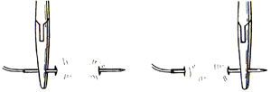
Needles are usually flattened where grasped by the needle-holders.
Various cross sections are available:
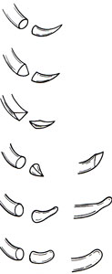
Round bodies
Use a round-body for fragile tissue (strands are pushed aside with
minimal damage instead of being cut).
- used for bowel and blood vessels because elastic return of tissue
around suture prevents leakage.
Cutting needles
Skin / fibrous tissue are resistant, so use triangular / flat x-section
needles.
- normal cutting needles have the apex of the triangular surface on the
inner aspect of the curve (second above)
- reverse cutting have it on the outside of the curve (third above)
- the reason is that if closing under tension, a normal cutting needle
slits the skin where the tension sits, increasing chance of the suture
cutting out.
- spear tips are also available (flat on both sides but sharp)
Blunt / taper points
Used for tissues like the abdo wall (soft)
- penetrate fascia and muscles but less likely to penetrate gloves /
skin of the surgeon.
Blund / round points
Used for soft viscera like liver
- want to avoid sharp edges here that will create splits likely to
extend.
Suturing
Start with hand fully pronated
like so:
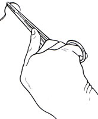
Drive the needle by progressively supinating.
- ie minimal trauma and minimal force.
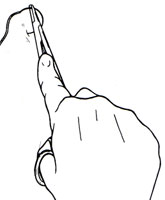
The wrist is fully supinated as the needle emerges:
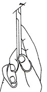
This technique will allow entry at right-angles to the skin.
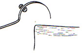
- the key point here is eversion.
- if the edges turn in, dead keratinised surfaces are opposed, healing
will be poor and the scar will be weak.
- ie the more deep tissue, relative to superficial tissue picked up by
the needle path, the greater the eversion.
Use closed tips of forceps to apply counterpressure near the point of
emergence of the needle.
- don't grab the needle tip or it will blunt.
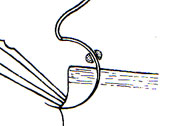
Now can grab with the forceps at a safe place to steady it, the regrasp
with needle holders.
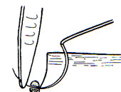
- when sufficient needle emerges, regrasp at the appropriate location
for the next stitch.
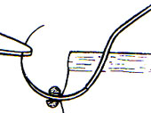
- with ideal needle-size selection, the middle regrasp can be avoided
for maximal efficiency.
Do not draw throught the thread by pulling on the needle.
- grasp the thread with a spare finger of the needle-holder hand.
Types of Stitch
Skin
Skin should generally be everted as noted.
- hence interrupted technique / mattress sutures are generally employed.
Bowel
Bowel should not normally be everted.
- if the serous coats are bought together, they seal and prevent
leakage (Antoine Lembert 1802-1851)
- a separate row of stitches picking up the serous and muscular coats,
placed inside the main stitches can invert serosa (1826).
The same effect can be achieved with an inverting mattress stitch.
- start outside to in through the bowel wall.
- return to surface on same side a short distance from entry stitch.
- now cross to opposite side and pass suture from outside in to the
mucosal surface.
- reurn it to the exterior from the inside out (emerge close to entry
stitch).
- tie and behold inversion (Connell, 1864).
Interrupteds
An imperfect knot weakens the suture by 50%.
- once one knot gives, the others are under greater tension.
- every knot must be tied perfectly every time.
Tension on sutures must be even, else the domino effect occurs.
- an over-tight suture may cut out.
Continuous stitches
Quick.
2 knots: beginning and end; these are crucial.
- leave the threads long and do 5+ ties.
Does not strangulate tissue, though tension is not sufficient to be
haemostatic generally.
- note in B below that when the needle is passed through the loop of
the previous stitch, a lock stitch
is created, holding the tension while the next stitch is inserted.
- don't drag the thread through or it will be damaged.
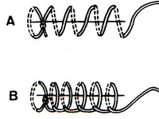
Mattress sutures can be continuous.
- with the loops on the outside it is everting (C)
- cf loops on inside, inverting (D).
- subcut stitch is simply a
continuous horizontal mattress where the sutures are buried (E)
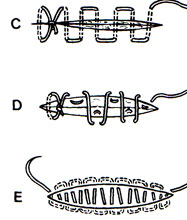
Ensure stitches lie perfectly by using closed dissecting forceps as a
guide during tightening.
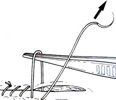
Ensure the thread is not twisting during the continuous stitch.
Creating inversion or eversion
during continuous stitching is enhanced by:
- following basic suturing principles
- can push in edges with finger as loop is tightened, or use the closed
dissecting forceps to invert (often done for bowel).
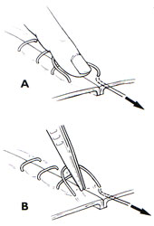
- for skin, continous loops will tend to evert, can pinch to achieve
eversion.
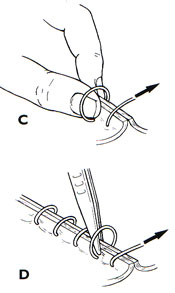
To finish the continuous run, there are two options.
i) traditionally, use the last loop like a single interrupted thread to
tie a standard knot with the leftover length.
ii) the Aberdeen knot (named for the fishermen who used this technique
to repair nets in Aberdeen).